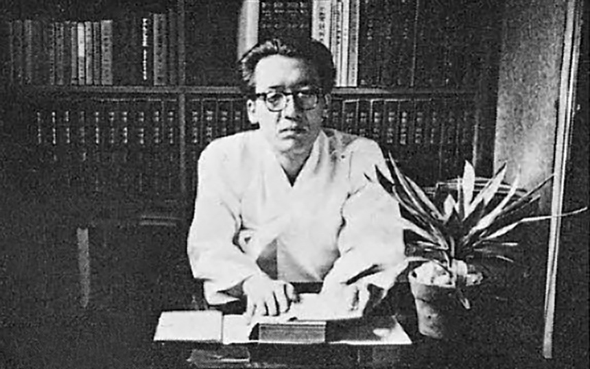
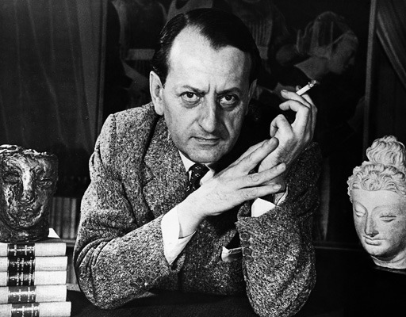
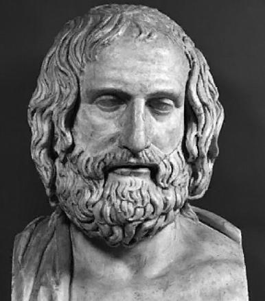
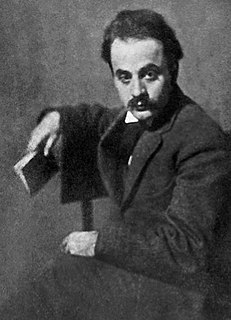
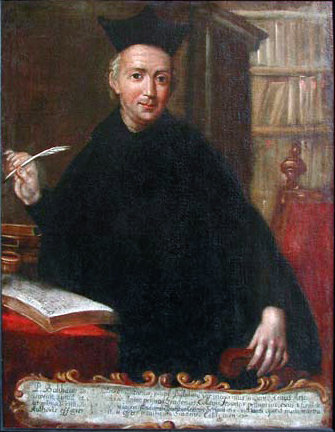

과거와 현재 그리고 미래...
시간이 존재하는 한, 우리는 과거로 돌아갈 수 없습니다.
대신 우리에겐 과거를 기억하는 힘이 있죠.
우리 모두는 저마다 기억하고 싶은 과거가 있습니다.
때로는 부끄럽거나 후회되는 흑역도 있겠지만 나중 가서는 그것들도 다 추억이 되곤 합니다.
피곤한 눈을 들어 차분한 밤하늘을 마주할 때면, 제 소중했던 유년시절이 새록 새록 떠오르곤 합니다.
소중한 과거를 그리워하기도 하고, 특정 인물을 그리워하기도 하고...
그리움이란 하나님께서 우리에게 허락하신
이번 별에서는 추억에 대해서 깊게 생각하는 시간을 가져보겠습니다.
“조금씩 잊혀져 간다
머물러 있는
사랑인 줄 알았는데
또 하루 멀어져 간다
매일 이별하며 살고 있구나
매일 이별하며 살고 있구나
[서른즈음에]-김광석”

“
한잔은 떠나버린 너를 위하여
한잔은 이미 초라해진 나를 위하여
또 한잔은 너와의 영원한 사랑을 위하여
그리고 마지막 한잔은
미리 알고 정하신 하나님을 위하여.......
[사모]-조지훈”

“그놈의 추억이라는 게 또 변화무쌍이거든......
상상력이란 참 비상한 거지!
우리들 자신 속에 들어 있으면서 자신에게도 낯선 것......
상상(想像)이란......그건 항상 메꿔 주는 거지.”
[인간의 조건]-앙드레 말로
“힘들고 아팠던 그 모든 시간들
다 이기고 이렇게 함께 선 우리들
이젠 모든 것이 추억이 되어
우리가 걸어갈 그 길을 비춰주리”
[우리가 노래하는 이유]-아이노스 밴드
"난 어른이 되면 지금 순간들을 잊어버릴 것 같다는 게 무섭더라.
우리는 졸업하게 되어도 지금의 추억들을 잊지 말자."
[문예빈], 2020
“컴퓨터에게 과거란 학습할 수 있는 데이터에 그치지만,
인간에게 과거란 그 사람의 인격 자체를 구성한다.”
[그리움]-김은호, 2020
“床前明月光，
疑是地上霜。
举头望明月，
低头思故乡。
밝은 달빛이 평상을 비춰보니,
마치 땅 위의 서리 같구나.
고개를 들어 달빛을 바라보고,
머리숙여 고향을 그린다.”
[静夜思(정야사)]-이백

“고생했던 추억도 지나고 보니 상쾌하다.”
[에우리피데스]

“추억은 일종의 만남이다."
[칼릴 지브란]

"사랑했던 시절의 따스한 추억과 뜨거운 그리움을 신비한 사랑의 힘에 의해
언제까지나 사라지지 않고 남아있게 한다."
[발타사르 그라시안]
"설령 과거를 되돌릴 수 있다고 해도,
많은 죽음과 슬픔을 겪고 모두가 극복해 온 세월을,
무의미한 것으로 해선 안돼."
[FSN]-에미야 시로”
“추억이란 인간의 진정한 재산이다.
기억 속에서 인간은 가장 부유하면서도
또 가장 빈곤하다.”
[알렉산더 스미스]